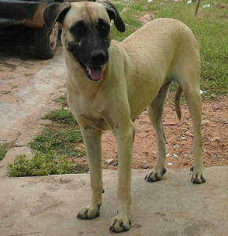

Fila Brasileiro
O Fila Brasileiro está presente na história do Brasil desde a colonização, pois protegia a comitiva dos ladrões, dos ataques de nativos e também ajudava na captura de escravos fugitivos. Muito fiel, procura constantemente a companhia dos donos. Este é desconfiado e mesmo agressivo com estranhos, de porte grande, este cão tambem é poderoso, inteligente, ativo, e obstinado. Este também é um protetor feroz da sua família e propriedade.
| Expectativa de Vida | Altura | Peso | |
|---|---|---|---|
| Mínimo | 10 Anos | 60 cm | 40 kg |
| Máximo | 12 Anos | 75 cm | 50 kg |
Veadeiro Pampeano
É desconfiado com estranhos, mas permite a aproximação sem se mostrar medroso ou agressivo. De fácil convívio com crianças e obdiente ao dono. Na caça é um perseguidor implacável que não se intimida com obstáculos, começa por encontrar a sua presa ao farejar o solo, sendo este cão excelente farejador. Encontrado o rastro, segue a caça a galope, mesmo que sejam precisos dois dias ininterruptos para alcançá-la, após encontrá-la, este abate a presa e a traz ao caçador se não conseguir abatê-la.
| Expectativa de Vida | Altura | Peso | |
|---|---|---|---|
| Mínimo | 10 Anos | 47 cm | 25 kg |
| Máximo | 12 Anos | 59 cm | 30 kg |
Cão Sertanejo
O Cão Sertanejo é polivalente, são muitas as suas habilidades, é há séculos utilizado pelo homem nas mais variadas tarefas, ajudam a guiar o gado com enorme destreza, são ótimos farejadores, perseguidores implacáveis das raposas e guardas fiéis da casa, da quinta e de toda a propriedade. Devido a sua inteligência, ao forte instinto de companheirismo, tornou-se indispensável ao homem sertanejo nos passeios rurais e na caça de subsistência.
| Expectativa de Vida | Altura | Peso | |
|---|---|---|---|
| Mínimo | 11 Anos | 50 cm | 12 kg |
| Máximo | 13 Anos | 58 cm | 22 kg |